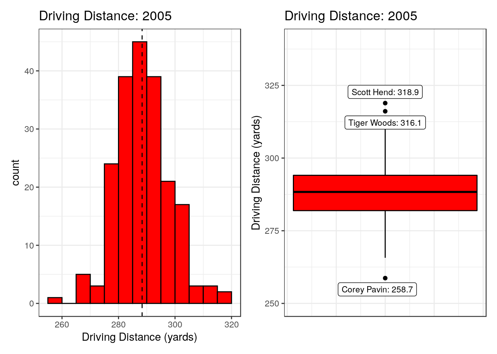
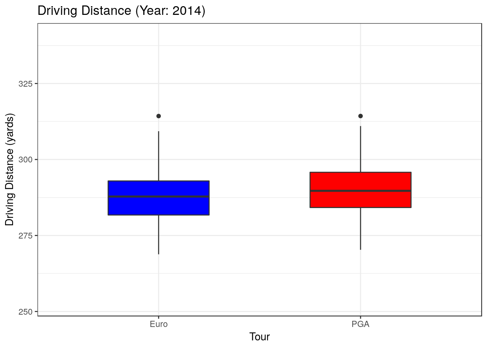

Ryder Cup 2021 Post-Mortem
This is an R Markdown document. Markdown is a simple formatting syntax for authoring HTML, PDF, and MS Word documents. For more details on using R Markdown see http://rmarkdown.rstudio.com.
When you click the Knit button a document will be generated that includes both content as well as the output of any embedded R code chunks within the document. You can embed an R code chunk like this. So sit back, put on Promise Me by Jerry Goldsmith, if you wish, and imagine the dulcet tones of David Livingstone “handing it back” to Ewen Murray in the commentary box while Butch stares down the barrel of the camera.
Boxplots overview.
As this analysis uses a lot of boxplots, I thought it would be useful to give a brief rundown of what they are for anyone that is unfamiliar with them.
As an illustrative example, I have used the average driving distance stats from the PGA Tour in 2005. The left plot shown below is a histogram, where driving distance is split into bins of 5 yards, from 255-320 yards, and the number of players in each bin is shown by the height of the bar. The black dashed line represents the median driving distance (288.4 yards), which means that 50% of the players hit it longer than 288.4 yards and 50% of the players have an average driving distance of less than that. Also you can see that the most common driving distance is in the 285-290 yard bin, with average drives exceeding 300 yards being relatively rare.
All this data can be displayed in a more compact fashion using a boxplot, which is shown on the right. This is representing the exact same data, average driving distance from 2005, just in a different format. These are also sometimes known as a “box and whisker plot”, representing the two distinctive features of the graph. The bold black line in the centre of the plot represents the median driving distance, just like the dashed black line in the histogram (288.4 yards). The bottom and top of the red box represents the 25th and 75th percentiles respecitively (281.9 and 294.1 yards). This means that 50% of the players on the PGA Tour in 2005 hit it on average between 281.9 and 294.1 yards off the tee. The difference between the 25th and 75th percentile is called the inter-quartile range (IQR) and this is used to work out the length of the “whisker”. The length whisker is goes as far as either the maximum/minimum value in your data or 1.5 times the IQR, whichever value is shorter. So in the example below, both whiskers are 1.5 times the IQR, because there are “outliers” which are very far away from the average (shown as black dots and labelled). There are two who had exceptionally long drives that year (Scott Hend and Tiger Woods). Meanwhile Corey Pavin was the shortest on tour with an average of 258.7 yards.
Boxplots will be used for the remainder of the article to discuss differences in the driving distances of the Ryder Cup teams in recent years. Also this 2005 data is a handy reference point for seeing how far driving distances have improved in the last 16 years.

Ryder Cups (2014-2021)
The last 4 Ryder Cups have all been won by the home team. In the plot below, the composition of the different teams, in terms of driving distance, is represented by boxplots. In keeping with tradition Europe is blue and USA in red.
The European team of 2014 was an interesting example where most of the team were tightly packed in the mid-low 290s, with Thomas Bjorn and G-Mac being substantial outliers on the short side and Rory providing his customary pop.

In 2016, the value of the 75th percentile (top of blue box) increased for Europe, due to the fact that Justin Rose and Sergio Garcia had tacked on some extra yardage and also the addition of Thomas Pieters to the team. But the USA team increased in a similar fashion and they took home the trophy at Hazeltine.
The most notable shift however has happened in the USA team for the last two editions. The median driving distances of the U.S. team (thick black line in red box) were 305 and 304 yards respectively, i.e. half the American team had an average driving distance in excess of 304 yards. The Americans were not able to bludgeon the European team on the tight fairways at Le Golf National, and the European team came out on top with a convincing victory. That gulf in power was still evident last month at Whistling Straits, where the European team’s 75th percentile of driving distance (305 yards) was just 1 yard longer than the median of the USA team. That means that where the European team had 3 players who could hit it further than 305 yards on average, the Americans had 6 such players, and on a course like Whistling Straits that proved extremely advantageous.
This is not to be interpreted in any way as a dig at Whistling Straits. It is a spectacular setting, with many challenging holes and is a worthy major championship venue. But it does have quite a few risk-reward short par 4s that could be attacked and having power was an advantage for the very tricky long par 3 17th. The last two times it has hosted the PGA Championship, 2010 and 2015, the top 10s have been full of big hitters such as Jason Day (winner in 2015), Bubba Watson (lost in a playoff), Rory McIlroy, Brooks Koepka, Tony Finau, George Coetzee, Branden Grace and of course who could forget Dustin Johnson, with his infamous trip into the “fairway bunker” on the 72nd hole in 2010.
Whistling Straits is a golf course that rewards long hitters and the USA are perfectly entitled to choose a course which is tailor made to suit their players. But that begs a question, do players just hit it further on the PGA Tour?
Tour comparison
To examine differences in the respective tours, data for all players from both tours were considered. Below in an animation of boxplots for both the PGA and European tours for all years from 2014-2021.

While the animation looks very fancy, it is probably more informative to view all 8 years side by side. The PGA tour did seem to have a marginal advantage in the first few years, but certainly since 2018 they have been extremely similar. The European Tour did have longer hitting than the PGA tour in 2020, but I think that was more an artifact of the interruption of the pandemic and the re-jigged calendar.
All in all, there isn’t a substantial difference between driving distances on the respective tours (especially in recent year). It just appears that the most successful Americans turn out to be longer hitters than the most successful Europeans. Whether that is a product of the courses that they play on in the PGA Tour or something different entirely is something I am not qualified to comment on.
Conclusions
Produced by Aimsir Spóirt
(generated using R Markdown)